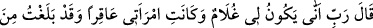
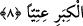
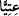
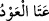
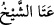
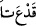

bilgiyi Nakkâş zikretmiştir.
8. (Zekeriyya) dedi ki: “Rabb’im, benim nasıl oğlum olur?! Karım kısır. Ben ise
ihtiyarlığın son sınırına vardım.”
Bu cümle yeni bir cümle olup gizli bir soruya cevap olarak gelmiştir. Sanki yedinci
âyetten sonra, “Zekeriyya ne dedi?” diye bir soru sorulmuş buna şöyle cevap
verilmiştir: Zekeriyya “dedi ki: Rabbim”
Allah Teala’nın hitabı kendisine melek vasıtasıyla ulaştığı halde Zekeriyya (a.s.)
Allâh’a münâcât ve yalvarmayı hâlisâne yapmak için doğrudan “Rabbim!” diyerek
seslenmiştir. Meleğe seslenmemiştir. Allâh’ın onun seslenmesini duyması, meleğin
aracılığına bağlıymış gibi bir şüpheyi def etmek için Hz. Zekeriyya doğrudan Allâh’a
seslenmiştir. Allâh’ın insanlardan kaynaklanan bir şeyi duyup bilmesi hiçbir aracıya
bağlı olmadığı halde, insanların Allâh’ın murâdını duyması her zaman bir meleğin
aracılığına bağlıdır.
“Benim nasıl oğlum olur?!” yani nasıl veya nereden benim oğlum olabilir ki!
“Karım kısır.” O, ne kendi gençliğinde ne de benim gençlik çağımda hiç doğurmadı.
Şimdi ise karım ihtiyardır, nasıl doğurabilir? “Ben ise” yaşımın büyüklüğü sebebiyle
“ihtiyarlığın son sınırına vardım.”
Âyette geçen “” kelimesi bir odun parçası gibi kurumak demektir. Nitekim
Araplar, odun parçası kuruduğunda, “”, bir kimse yaşlandığında “”
derler. Yine nihâyete eren her şeye de “” derler.
Âyette yaşlı bir erkekten ve kısır bir kadından çocuğun meydana gelmesine şaşılması,
çocuğun meydana gelmesinde te’sir edenin Allâh’ın sonsuz kudreti olduğunu ve aslında
diğer vâsıtaların yok sayıldığını îtirâf etmek içindir. Buradaki şaşkınlık ve yadırgama
Allâh’ın kudreti bakımından değil âdete/alışılagelene göredir.
İmam Râzî şöyle der: “Eğer ‘Hz. Zekeriyya Allah’tan evlâd istediği halde, ‘Benim
nasıl oğlum olur?’ diye şaşırdığını gösteren bir ifadeyi niçin kullanmıştır?” denilirse,
biz buna cevap olarak şöyle deriz: Hz. Zekeriyya Allâh’ın kendilerini gençleştirip sonra
evlâd vermesine veya onları ihtiyar olarak bırakıp ihtiyarlıklarına rağmen evlâd
vermesine şaşırmıştır. Nitekim şu âyet buna delildir: “Rabbim! Beni yalnız bırakma!
Sen, vârislerin en hayırlısısın, (her şey sonunda Senindir). Biz onun da duasını
kabul ettik ve ona Yahya’yı verdik; eşini de kendisi için (çocuk doğurmaya) elverişli
kıldık.” (el-Enbiya, 21/89-90) yani onun hanımına doğurma gücü verdik.”
el-Es’iletü’l-mukhime’de şöyle der: “Zekeriyya (a.s.) bu çocuğun kimden olacağını,